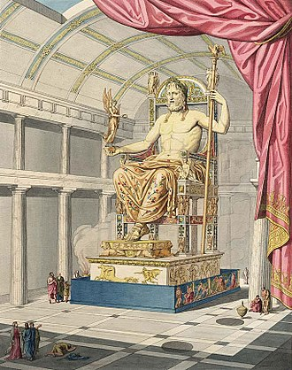

 The Statue of Zeus at Olympia was a giant seated figure, about 12.4 m (41 ft) tall, made by the Greek sculptor Phidias around 435 BC at the sanctuary of Olympia, Greece, and erected in the Temple of Zeus there. A chryselephantine sculpture of ivory plates and gold panels on a wooden framework, it represented the god Zeus on a cedarwood throne ornamented with ebony, ivory, gold and precious stones. One of the Seven Wonders of the Ancient World, the statue was lost and destroyed during the 5th century AD; details of its form are known only from ancient Greek descriptions and representations on coins.
The statue of Zeus was commissioned by the Eleans, custodians of the Olympic Games, in the latter half of the fifth century BC for their newly constructed Temple of Zeus. Seeking to outdo their Athenian rivals, the Eleans employed the renowned sculptor Phidias, who had previously made the massive statue of Athena Parthenos in the Parthenon.
The statue occupied half the width of the aisle of the temple built to house it. "It seems that if Zeus were to stand up," the geographer Strabo noted early in the 1st century BC, "he would unroof the temple. "The Zeus was a chryselephantine sculpture, made with ivory and gold panels on a wooden substructure. No copy in marble or bronze has survived, though there are recognizable but only approximate versions on coins of nearby Elis and on Roman coins and engraved gems.